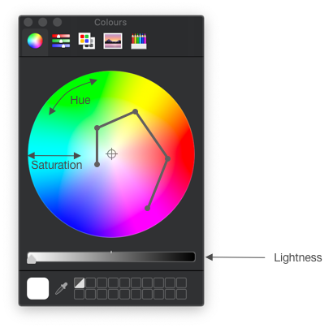
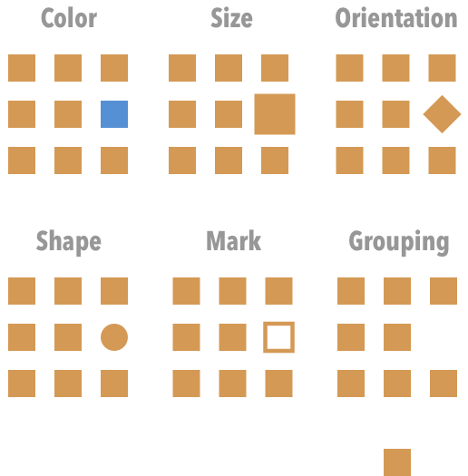
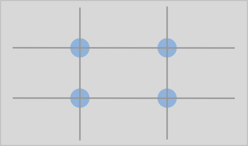
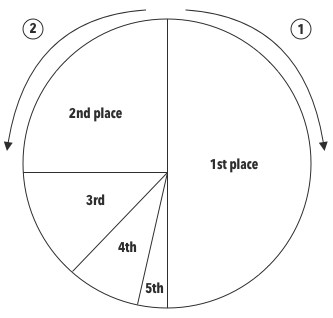

Scientists are expected to be effective communicators, but that can be a little tricky without a few conscious tricks up your sleeve.
Visualization, in particular, can be a very powerful means of conveying information, be it in your papers, posters, presentations, chapters, or blogposts.
🖍 Nota bene: In this post, I summarize a few recommendations from various sources that I, personally, found very useful. For a more in-depth take on the following and other points, do consult the series of Points of View columns published in Nature Methods. A collection of these can be found here. Another great online read can be found here.
Please note that all of these recommendations are meant to be general and that one should always take into account any field-specific conventions.
Color
There are a few things to know about color.
First, color varies in terms of:
- Hue: “the attribute we use to classify a color as red or yellow.” [1]
- Saturation: which “describes the neutrality of a color; a red object with little or no white is said to be very saturated.” [1]
- Lightness: which “tells us about its relative ordering on the dark-to-light scale.” [1]
Figure 1 shows a way to represent these dimensions:

Now, when picking colors, these should ideally be discernible in grayscale as well. That way, if someone prints your figure in black and white, they still get the message 😊. One way to do this is to spiral around the color wheel while varying lightness as well. This only works effectively for a limited number of colors: around 6 to 8 [1]. Past 8, it just becomes harder to find discernible colors.
As for representing data, color is ill-suited to represent quantitative data, because it is not in principle clear how to order different colors. It is, however, appropriate to characterize categorical data.
While color might make a figure seem nicer, it should be used judiciously. Indeed, there are better strategies to compare elements, and these were ranked by Cleveland and McGill [2]:
| Rank | Aspect compared |
|---|---|
| 1 | Position along common scale |
| 2 | Position on the same, but non-aligned scales |
| 3 | Length |
| 4 | Angle |
| 5 | Area |
| 6 | Volume |
| Color saturation | |
| 7 | Color hue |
This made me realize that bar charts are a very effective tool for comparison!
A word on color blindness
Given that certain forms of color blindness are quite common, this is something that you should definitely take into account. Here is a list of colors from Bang Wong, optimized for color-blind individuals [3]:
| Color | Color name | RGB |
|---|---|---|
| Black | 0, 0, 0 | |
| Orange | 230, 159, 0 | |
 |
Sky blue | 86, 180, 233 |
| Blueish green | 0, 158, 115 | |
| Yellow | 240, 228, 66 | |
| Blue | 0, 114, 178 | |
| Vermillion | 213, 94, 0 | |
| Reddish purple | 204, 121, 167 |
Salience
Now that we’ve reviewed a few tricks of how to effectively compare elements, let’s see how to create contrast, i.e. visually separate one part of an image from the rest. Salience, the visual quality of an object that makes it more prominent, can be achieved in several ways [1]:

A few notes on this:
- Sometimes, it might make sense to have multiple views of the same graph, in order to emphasize one thing at a time.
- Make sure the most salient aspect of the figure is also the most relevant!
Gestalt principles
The Gestalt principles of perception are a set of principles which attempt to explain why humans naturally perceive objects as being organized or grouped [5]. There are several principles [4-5]:
| Principle | Remarks |
|---|---|
| Similarity | Similar objects are grouped together |
| Proximity | Grouping based on distance (do you see 2 rows?) |
| Connection | Lines create a clear connection and groups  |
| Enclosure | Enclosure can overcome the other principles. |
Notice how you can use enclosure to bring the reader’s attention to different parts of a graph or table!
Layout
A layout has both an aesthetic and clarifying purpose. A simple way to organize your slides/posters is to follow the “rule of thirds” [6].

Basically, you can start by dividing the page into 9 equal parts. Objects placed along the lines and especially at their intersection points (the so-called power points) become more prominent. You can use this to guide the observer.
Other
The above principles should already help a fair amount, but here are few other tips:
- Negative space (or whitespace): use it to structure your visualization and to let it breathe (no one likes crammed posters…). For more on this, see [7].
- Typography: favor sans serif fonts for slides and serif fonts for greater lengths of text (e.g. posters, papers) [8].
- Overview figures: these can be very helpful! However, keep them simple and avoid entering graphs or results at this point [9].
- 🧨 Pie charts: while pie charts can be useful in describing parts of a whole and are standard practise in some fields, they have been criticized. Edward Tufte once wrote “the only design worse than a pie chart is several of them” [10]. To compare elements, pie charts rely on differences in area or angle, and we have previously seen that there are more effective means of comparison. Hence, a bar chart can often be a more effective alternative. If you do opt for a pie chart, you might want to know that a specific ordering of slices is sometimes recommended. Specifically, Bang Wong writes: “place the largest wedge to the right of 12 o’clock, the second largest to the left of 12 o’clock and the remainder counter-clockwise descending in size” [11]. Graphically:

References
[1] B. Wong, “Color coding”, Nature Methods, 7:573, 2010.
[3] B. Wong, “Color blindness”, Nature Methods, 8:441, 2011.
[4] B. Wong, “Gestalt principles (part 1)”, Nature Methods, 7:863, 2010.
[5] Principles of grouping, Wikipedia, [accessed on 10.02.2020]
[6] B. Wong, “Layout”, Nature Methods, 8:783, 2011.
[7] B. Wong, “Negative Space”, Nature Methods, 8:5, 2011.
[8] B. Wong, “Typography”, Nature Methods, 8:277, 2011.
[9] B. Wong, “The overview figure”, Nature Methods, 8:365, 2011.
[10] E. Tufte, The Visual Display of Quantitative Information, 2nd edition, Graphics Press, 2001.
[11] B. Wang, Points of review (part 2), Nature Methods, 8:189, 2011.